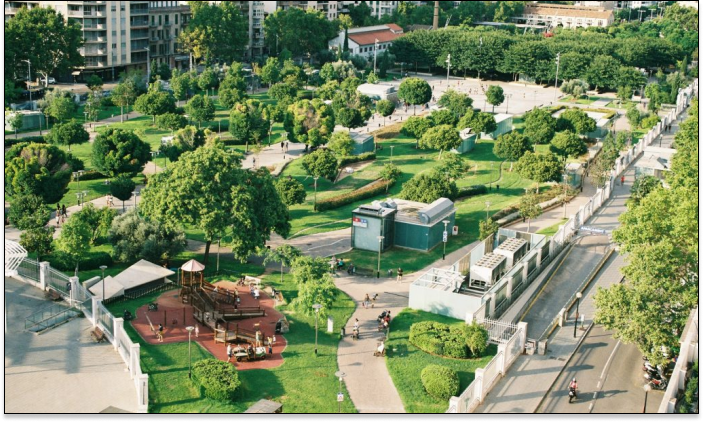
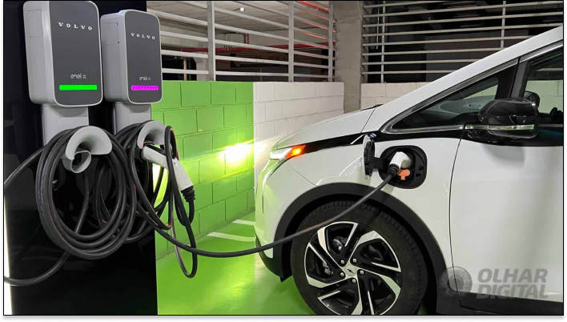
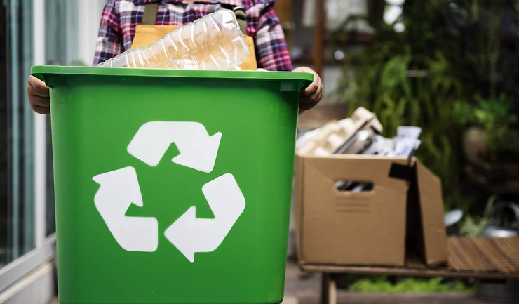
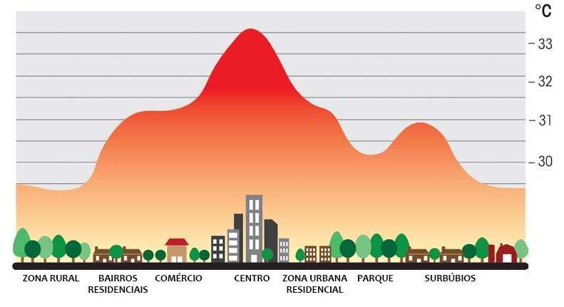
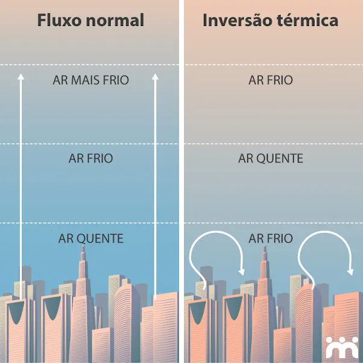
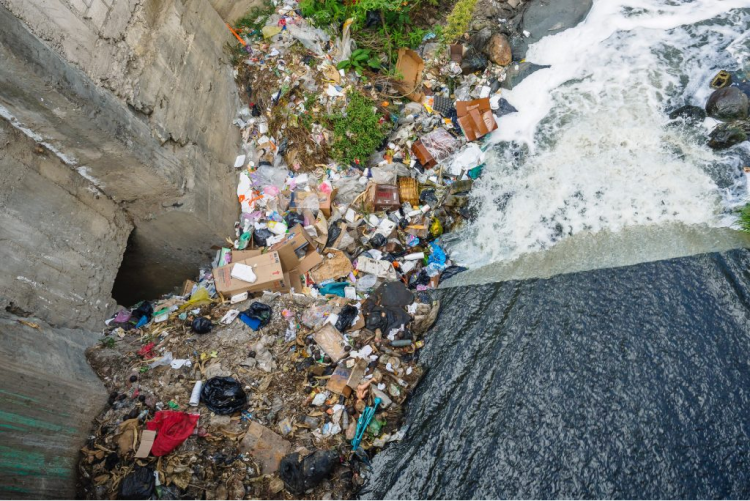
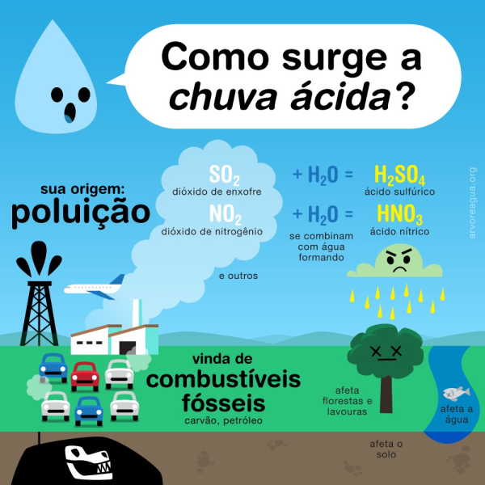

SUSTENTABILIDADE
Existem várias soluções para reduzir a poluição nas áreas urbanas, que envolvem tanto mudanças individuais quanto políticas públicas.
Espaços verdes e florestas urbanas
Espaços verdes e florestas urbanas desempenham um papel crucial na melhoria da qualidade do ar e na mitigação dos efeitos das mudanças climáticas. Eles ajudam a reduzir a poluição do ar ao capturar partículas e gases poluentes, além de fornecer sombra e reduzir a temperatura ambiente, combatendo o efeito de ilha de calor.
Veículos de combustível alternativo
Veículos de combustível alternativo, como os elétricos e movidos a hidrogênio, são essenciais para reduzir as emissões de gases poluentes nas áreas urbanas. Veículos Elétricos (EVs): Funcionam com baterias recarregáveis e não emitem poluentes durante a operação. A infraestrutura de recarga está se expandindo rapidamente. Veiculos a Hidrogênio: Utilizam células de combustível que produzem eletricidade a partir da reação entre hidrogênio e oxigênio, emitindo apenas água como subproduto; benefícios: Redução das emissões de CO₂ e outros poluentes, menor dependência de combustíveis fósseis, melhoria da qualidade do ar urbano
Redução de resíduos e reciclagem
A redução de resíduos e a reciclagem são práticas fundamentais para minimizar o impacto ambiental das cidades. Redução de Resíduos na Fonte: Implementação de processos ecoeficientes que diminuem a geração de resíduos desde a origem. Reciclagem: Separação e processamento de materiais recicláveis para reduzir a quantidade de resíduos enviados a aterros sanitários; benefícios: conservação de recursos naturais, redução da poluição do solo e da água, criação de empregos na indústria de reciclagem
Energias renováveis
A adoção de energias renováveis é uma solução sustentável para reduzir a poluição e a dependência de combustíveis fósseis. Energia Solar: Utilização de painéis solares para gerar eletricidade a partir da luz solar. Energia Eólica: Geração de eletricidade a partir do vento usando turbinas eólicas.; benefícios: redução das emissões de gases de efeito estufa, diminuição da pegada de carbono, fornecimento de energia limpa e sustentável
Infraestrutura para bicicletas
Promover o uso de bicicletas através da criação de ciclovias e estacionamentos para bicicletas pode reduzir a dependência de veículos motorizados e, consequentemente, a emissão de poluentes.
Transporte público
Melhorar e expandir o transporte público pode diminuir o número de carros nas ruas, reduzindo a poluição do ar. Incentivar o uso de ônibus elétricos ou movidos a combustíveis alternativos também é uma medida eficaz.
Zonas de baixa emissão
Implementar zonas de baixa emissão, onde apenas veículos que atendem a certos padrões de emissão podem circular, ajuda a diminuir a poluição em áreas específicas da cidade
Soluções sustentáveis para desafios específicos
Ilhas de Calor
Aumentar a cobertura vegetal urbana, implementar telhados verdes e superfícies refletivas para reduzir a absorção de calor, planejamento urbano que proporcione maiores espaçamentos entre novas construções.
Inversão Térmica
Reduzir as emissões de poluentes através do uso de veículos de combustível alternativo e tecnologias industriais limpas
Enchentes
Desenvolver infraestrutura verde, como jardins de chuva e pavimentos permeáveis, para melhorar a drenagem e reduzir o risco de enchentes.
Chuvas Ácidas
Reduzir as emissões de óxidos de enxofre (SOₓ) e óxidos de nitrogênio (NOₓ) através da adoção de energias renováveis e tecnologias de controle de poluição.
